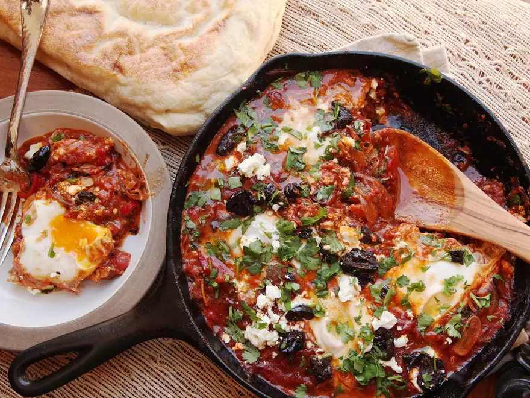

Shakshuka

Description
The greatest thing about shakshuka is that it's made completely out of pantry staples (with the exception of the fresh peppers), which means you're pretty much always a half hour away from a pretty fantastic meal.
Ingredients
- 3 tablespoons (45ml) extra-virgin olive oil, plus more for drizzlin
- 1 medium onion, thinly sliced
- 1 large red pepper (bell pepper for milder heat, or a hotter variety, such as red horned pepper, depending on your heat preference), stems, seeds, and ribs removed, thinly sliced
- 1 fresh small hot chile (such as jalapeño, serrano, or Fresno), stems, seeds, and ribs removed, thinly sliced
- 2 to 3 cloves garlic, thinly sliced
- 1 1/2 tablespoons (15g) sweet Hungarian or smoked Spanish paprika
- 2 teaspoons (8g) whole or ground cumin seed
- 1 (28-ounce; 800g) can whole peeled tomatoes, crushed by squeezing between your fingers or with a pastry blender (see note)
- Kosher salt and freshly ground black pepper
- Large handful minced cilantro, parsley, or a mix
- 6 large eggs
Directions
- Heat olive oil in a large, deep skillet or straight-sided sauté pan over high heat until shimmering. Add onion, red pepper, and chile and spread into an even layer. Cook, without moving, until vegetables on the bottom are deeply browned and beginning to char in spots, about 6 minutes. Stir and repeat. Continue to cook until vegetables are fully softened and spottily charred, about another 4 minutes. Add garlic and cook, stirring, until softened and fragrant, about 30 seconds. Add paprika and cumin and cook, stirring, until fragrant, about 30 seconds. Immediately add tomatoes and stir to combine (see note). Reduce heat to a bare simmer and simmer for 10 minutes, then season to taste with salt and pepper and stir in half of cilantro or parsley.
- Using a large spoon, make a well near the perimeter of the pan and break an egg directly into it. Spoon a little sauce over edges of egg white to partially submerge and contain it, leaving yolk exposed. Repeat with remaining 5 eggs, working around pan as you go. Season eggs with a little salt, cover, reduce heat to lowest setting, and cook until egg whites are barely set and yolks are still runny, 5 to 8 minutes.
- Sprinkle with remaining cilantro or parsley, along with any of the optional toppings. Serve immediately with crusty bread.
Source: Serious Eats